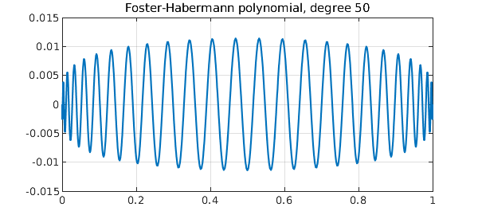
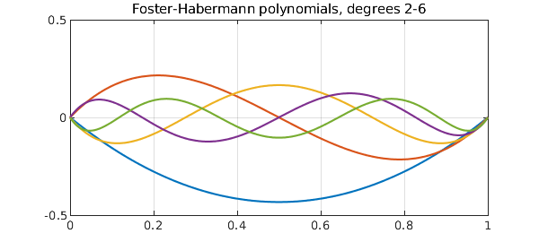
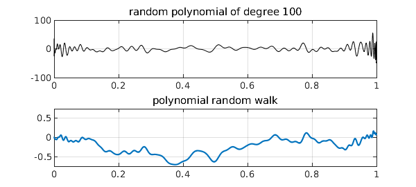
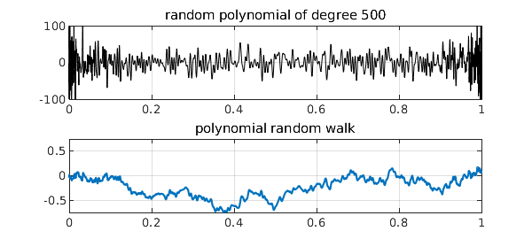
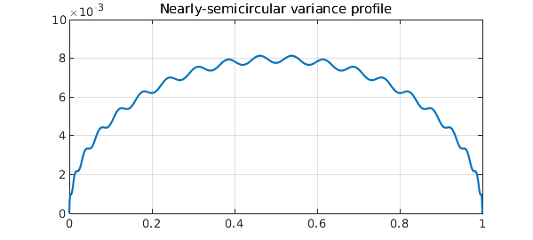

The Chebfun randnfun(d) command produces a smooth random function with maximal wavelength $d$, as described in [1], which converges (or rather fails to converge!) to white noise as $d\to 0$. Its integral is a smooth random walk, which converges (properly this time) to Brownian motion as $d\to 0$. Here is an example:
rng(1)
r = randnfun(0.01,[0,1]);
LW = 'linewidth';
subplot(2,1,1), plot(r,'k',LW,.6)
grid on, title('smooth random function')
b = cumsum(r);
subplot(2,1,2), plot(b), grid on, title('smooth random walk')

All this is done via trigonometric polynomials with random coefficients. (The idea of Fourier series with random coefficients goes back to Norbert Wiener and is treated in a marvelous book by Kahane [4].) A priori, a smooth random function is periodic and translation-invariant. In practice we usually want a nonperiodic function, and Chebfun achieves this (with small though in principle nonzero error) by truncation from a longer periodic interval to a shorter nonperiodic one.
One might ask, what are the analogues of these constructions for algebraic as opposed to trigonometric polynomials? An answer to this question has recently been provided in a pair of papers by Foster, et al. [2] and Habermann [3]. We define a random polynomial of degree $n$ by $$ r(x) = \sum_{k=0}^n c_k \sqrt{2k+1} P_k(x), $$ where $P_k$ is the degree $k$ Legendre polynomial (shifted to $[0,1]$) and the $c_k$ are i.i.d. standard normal random variables. As $n\to\infty$, $r$ does not look like white noise, for it has higher frequencies and higher amplitudes near the endpoints than in the middle (examples will be shown in a moment). However, its integral converges to Brownian motion. Using the convenient identity $$ \int_0^t P_k(s) ds = {P_{k+1}(t) - P_{k-1}(t)\over 4k+2} \quad (k\ge 1), $$ we conclude that polynomial random walk of degree $n$ can be defined by $$ w(t) = c_0 t + \sum_{k=1}^{n-1} c_k {P_{k+1}(t) - P_{k-1}(t) \over \sqrt{8k+4}}. $$ Foster, et al. note that the polynomials in this sum can be interpreted as Jacobi polynomials, except with the nonstandard exponents $-1$, and thus constrained to take the value 0 at both endpoints. Here for example is the degree $50$ "Foster-Habermann polynomial":
scaled_legendre = @(n) legpoly(n,[0 1])*diag(sqrt(2*n+1));
foster = @(n) (legpoly(n,[0 1])-legpoly(n-2,[0 1]))*diag(1./sqrt(8*n-4));
clf, plot(foster(50)), grid on
title('Foster-Habermann polynomial, degree 50')

The same anonymous functions work for multiple columns. Here, for example, are the Foster-Habermann polynomials of degrees 2 through 6:
plot(foster(2:6)), grid on, ylim([-.5 .5])
title('Foster-Habermann polynomials, degrees 2-6')

Random polynomials can now be obtained by taking random linear combinations of the scaled Legendre polynomials, and polynomial random walks can be obtained from random linear combinations of the Foster-Habermann polynomials. Here are suitable anonymous functions (we could also have defined ranwalk via cumsum):
ranpoly = @(n) scaled_legendre(0:n)*randn(n+1,1);
t = chebfun('t',[0,1]);
ranwalk = @(n) t*randn + foster(2:n)*randn(n-1,1);
Here, for example, are random polynomials of degrees 20, 100, and 500 with their corresponding random walks of degrees 21, 101, and 501:
for n = 20*5.^(0:2)
rng(3)
subplot(2,1,1), plot(ranpoly(n),'k',LW,.6), ylim([-100 100])
grid on, title(['random polynomial of degree ' int2str(n)])
rng(3)
subplot(2,1,2), plot(ranwalk(n+1)), ylim([-.75 .75])
grid on, title('polynomial random walk')
snapnow
end


Note that, as usual for polynomials, these shapes are in no sense translation-invariant, having faster oscillations near the endpoints than in the middle. Still, it is proved in [2] and [3] that the polynomial random walks approach Brownian motion as $n\to \infty$. Many other interesting properties are also developed in [2] and [3], concerning polynomial moments, for example, as well as applications to the numerical solution of stochastic differential equations.
How do polynomial random walks of a finite degree $n$ differ from true Brownian motion? The essence of the polynomial construction we have described is that the contributions of different degrees are independent (ultimately since the Legendre polynomials are orthogonal; the argument in [3] for this makes use of the result known as Itô's isometry)). It has been shown in [3] that the variance of the difference converges to zero at the rate $O(1/n)$ and approaches a semicircle in profile. An explicit formula involves $t-t^2$ minus the sum of the squares of the Foster-Habermann polynomials. Thus for example, here is the variance of the error process for degree $n=20$:
s = chebfun('t-t^2',[0,1]);
for k = 2:20
s = s - foster(k).^2;
end
clf, plot(s), grid on
title('Nearly-semicircular variance profile')

Beautiful!
References
[1] S. Filip, A. Javeed, and L. N. Trefethen, Smooth random functions, random ODEs, and Gaussian processes, SIAM Review 61 (2019), 185--205.
[2] J. Foster, T. Lyons, and H. Oberhauser, An optimal polynomial approximation of Brownian motion, arXiv:1904.06998, 2019.
[3] K. Habermann, A semicircle law and decorrelation phenomena for iterated Kolmogorov loops, arXiv:1904.11484, 2019.
[4] J.-P. Kahane, Some Random Series of Functions, 2nd ed., Cambridge, 1985.